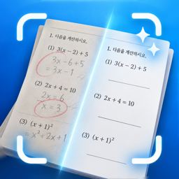

고객 지원 · Support
어떤 문제집에 잘 맞나요?
서술형·그림 문제에 연필로 쓴 풀이, 빨간펜 채점 표시, 색연필로 그린 그림과 밑줄은 잘 지워져요. 칸에 숫자를 채우는 연산 문제집은 인쇄된 숫자와 손글씨 숫자를 구별하기 어려워 잘 맞지 않아요. 영어 시험지, 아주 연한 연필 자국, 짙은 그림자도 남을 수 있어요.
필기가 조금 남았어요.
결과 화면에서 편집을 누르고 지우개로 남은 자국 위를 문지르면 바로 지워져요. 두 손가락으로 크게 보면서 칠하면 더 깔끔해요.
인쇄된 글자가 같이 지워졌어요.
편집에서 복원을 고르면 지워진 부분이 파랗게 보여요. 되살릴 글자 위를 문지르면 원래대로 돌아와요. 원본 보기를 누르고 있으면 찍은 사진과 비교할 수 있어요.
무료 10장은 어떻게 세나요?
필기 지우기에 성공한 장만 세요. 실패한 장은 세지 않고, 같은 장을 다시 지워도 한 번만 세요. 결과를 편집하거나 인쇄·저장하는 것은 무료예요.
찍은 뒤에 영역을 바꿀 수 있나요?
스캐너 화면 왼쪽 아래의 사진을 누르면 찍은 장마다 영역을 조정할 수 있어요. 지우기를 시작한 뒤에는 바꿀 수 없으니, 시작하기 전에 확인해 주세요.
구독을 해지하거나 복원하려면요?
앱의 설정 > 구독 관리에서 해지할 수 있어요. iPhone의 설정 > 내 이름 > 구독에서도 할 수 있어요. 기기를 바꿨다면 설정 > 구매 내역 복원을 눌러 주세요.
사진이 서버로 전송되나요?
아니요. 모든 처리는 iPhone 안에서 이뤄지고, 앱에는 서버도 회원가입도 없어요. 자세한 내용은 개인정보 처리방침에 있어요.
화면 캡처가 되지 않아요.
앱 화면은 캡처와 화면 녹화에 담기지 않아요. 결과는 인쇄·저장에서 인쇄하거나 PDF, 앨범으로 저장할 수 있어요.
그 밖의 문제가 있어요.
아래 메일로 iPhone 모델, iOS 버전, 어떤 상황이었는지 알려 주세요.
Which workbooks does it work best on?
Pencil working on word and picture problems, red-pen grading marks, and colored-pencil drawings are removed well. Arithmetic drills where digits are written into printed grids don't work well, because printed and handwritten digits look alike. English test sheets, very faint pencil and heavy shadows may also remain.
Some handwriting is left.
Tap Touch Up on the result and paint over it with the Eraser. Zoom in with two fingers for fine work.
Printed text was erased too.
In Touch Up choose Restore. Erased areas show in blue; paint over them to bring them back. Hold Original to compare with your photo.
How are the 10 free pages counted?
Only pages that were erased successfully count. Failed pages don't, and erasing the same page again counts once. Touching up, printing and saving are always free.
Cancel or restore a subscription
Use Settings > Manage subscription in the app, or iPhone Settings > your name > Subscriptions. On a new device, tap Settings > Restore purchases.
Are my photos uploaded?
No. Everything is processed on your iPhone. There is no server and no account. See the privacy policy.
Screenshots come out blank.
The app's screens are excluded from screenshots and screen recordings by design. Print or save results from Print · Save.
Something else is wrong.
Email us with your iPhone model, iOS version and what happened.